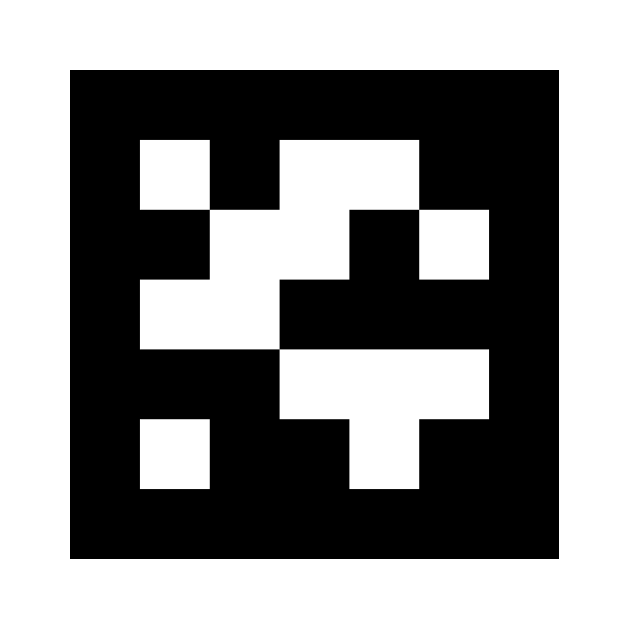

Imprime en A4, a escala 100 % / tamaño real. Desactiva encabezados y pies de página. Usa papel mate y conserva todo el margen blanco.

El cuadrado negro exterior debe medir 14 × 14 cm. La imagen completa con margen blanco mide 18 × 18 cm. Comprueba con una regla antes de usarla.
Esta línea mide 5 cm. En la aplicación toca Ver marcador, apunta al patrón completo y mantenlo visible.